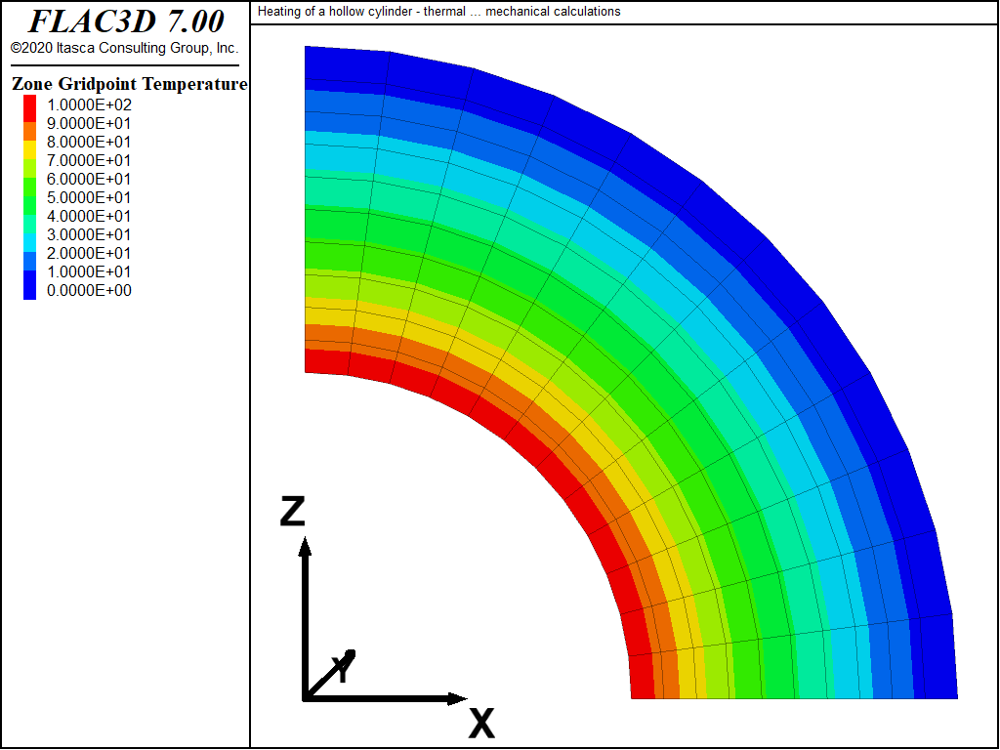
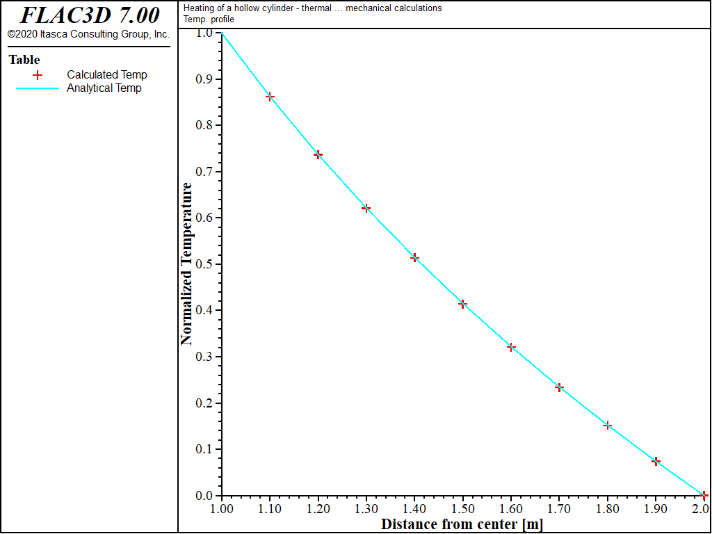
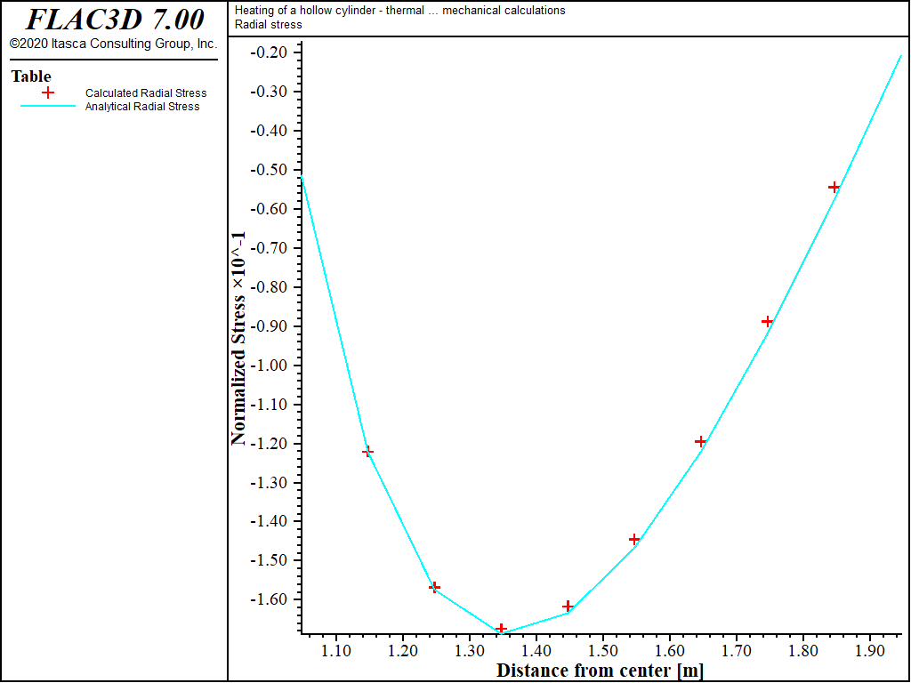
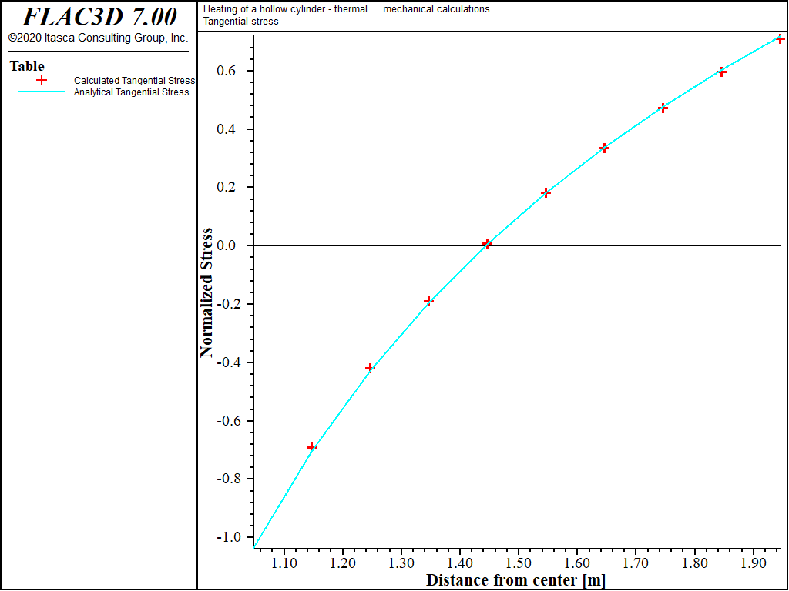
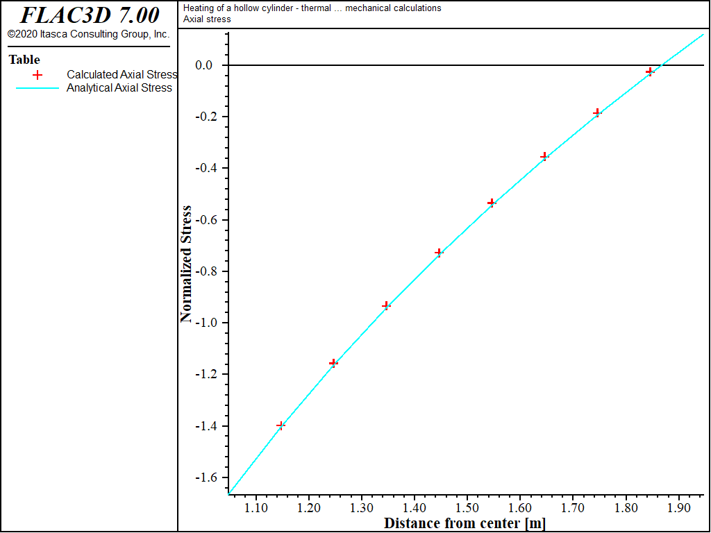

空心圆柱中的导热
注意
本示例的项目文件可在 FLAC3D 中查看/运行。[1] 该项目的主数据文件见本示例末尾（main data files）。
一个无限长空心圆柱最初处于 0°C 的恒温状态。圆柱内半径暴露于 100°C 的恒定温度，外半径保持 0°C。本问题是要确定达到热平衡状态时圆柱内的温度和热致应力。
Nowacki（1962）以稳态热状态下的温度以及径向、切向和轴向应力给出了该问题的解：
| 其中： | \(T\) | = | 温度； |
| \(r\) | = | 距圆柱中心的径向距离； | |
| \(a\) | = | 圆柱内半径； | |
| \(b\) | = | 圆柱外半径； | |
| \(T_a\) | = | 内半径处的温度； | |
| \(\sigma_r\) | = | 径向应力； | |
| \(\sigma_t\) | = | 切向应力； | |
| \(\sigma_a\) | = | 轴向应力； | |
| \(m\) | = | \(3 K \alpha_t \over {\lambda + 2 G}\); | |
| \(\lambda\) | = | \(K - {2 \over 3} G\); | |
| \(K\) | = | 体积模量； | |
| \(G\) | = | 剪切模量；以及 | |
| \(\alpha_t\) | = | 线性热膨胀系数。 |
温度和应力的解析解在 FLAC3D 数据文件中编写为 FISH 函数。随后可在表格中直接比较解析结果与数值结果。
本算例规定了以下物性：
| 几何 | |
| 圆柱内半径（\(a\)） | 1.0 m |
| 圆柱的外半径（\(b\)） | 2.0 m |
| 材料性质 | |
| 密度（\(\rho\)） | 2000 kg/m3 |
| 比热（\(C_p\)） | 880.0 J/kg °C |
| 导热系数（\(k\)） | 4.2 W/m °C |
| 线性热膨胀系数（\(\alpha_t\)） | 5.4 × 10-6/ °C |
| 剪切模量（\(G\)） | 28.0 GPa |
| 体积模量（\(K\)） | 48.0 GPa |
采用 FLAC3D 对圆柱的一个薄的 1/4 剖面进行建模。图 1（Figure 1） 给出了 FLAC3D 网格。模型内半径指定为 100°C 的恒温边界；外半径温度指定为 0°C。
本问题中的材料为弹性。因此适合采用非耦合分析。首先进行热计算以达到平衡热流状态，然后计算热致力学应力。


图 1：空心圆柱加热的 FLAC3D 网格。
数值结果与解析结果在图 2（Figure 2） 至图 5（Figure 5） 中进行了比较。这些图给出了稳态时圆柱内温度和应力分布表格的图。在每幅图中，解析值以十字表示，数值以虚线表示。所绘制的值均为归一化值，其中温度除以 \(T_a\) 归一化，应力除以 \(m G T_a\) 归一化。图 2（Figure 2） 给出了数值解与解析解在稳态时的温度分布。两者吻合非常好，误差小于 0.1%。稳态时径向、切向和轴向应力分布的结果比较分别见图 3（Figure 3）、图 4（Figure 4） 和 图 5（Figure 5）。


图 2：空心圆柱加热时稳态温度分布。


图 3：空心圆柱加热时稳态径向应力分布。


图 4：空心圆柱加热时稳态切向应力分布。


图 5：空心圆柱加热时稳态轴向应力分布。
参考文献
Nowacki, W. Thermoelasticity. New York: Addison-Wesley (1962).
数据文件
; 空心圆柱的加热
; 耦合与非耦合热–力计算
model new
model large-strain off
fish automatic-create off
model title ...
'Heating of a hollow cylinder - thermal ... mechanical calculations'
model configure thermal
; --- 主计算 ---
zone create cylindrical-shell point 1 (2,0,0) point 2 (0,0.1,0) ...
point 3 (0,0,2) dimension (1,1,1,1) size 10 1 12
zone face skin
; --- 力学模型
zone cmodel assign elastic
zone property bulk 48e9 sh 28e9
zone face apply velocity-z 0 range group 'Bottom'
zone face apply velocity-x 0 range group 'West1'
zone face apply velocity-y 0 range group 'North' or 'South'
; --- 热学模型
zone thermal cmodel isotropic
zone thermal property conductivity 4.2 expansion 5.4e-6 specific-heat 880
zone initialize density 2000
zone face apply temperature 100 range group 'West2'
zone face apply temperature 0 range group 'East'
model save 'cyl-init'
; 非耦合分析
model mechanical active off
model thermal active on
model solve
model mechanical active on
model thermal active off
model solve
model thermal active on
model save 'cyl-ucpl'
; 耦合分析
model restore 'cyl-init'
model mechanical active on
model thermal active on
model mechanical substep 10000
model mechanical slave on
model solve ratio 1e-3
model save 'cyl-cpl'
program return
尾注
| [1] | 要在 FLAC3D 中查看该项目，请使用程序菜单。
⮡ FLAC |
| 这些内容对您有帮助吗？… | FLAC3D © 2019, Itasca | 原文更新于 2020 年 10 月 8 日 |